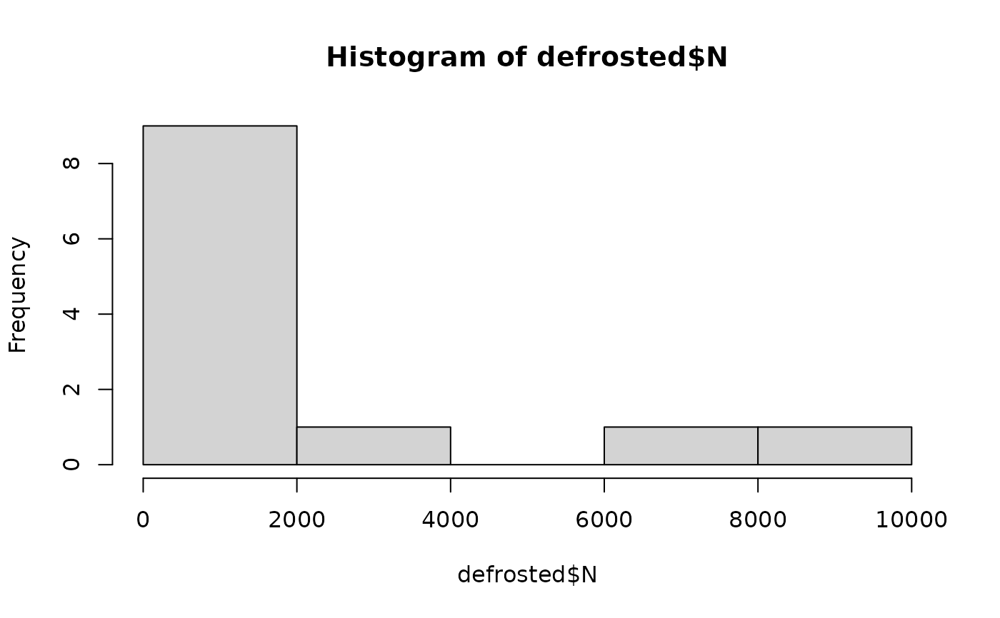

The fvDefrost() function simulates the possibility that consumers thaw frozen vegetables prior to cooking or consumption. If consumers defrost
frozen vegetables, the algorithm estimates the growth of L. monocytogenes during the time frozen vegetables are held for thawing.
The function employs the lognormal distribution to represent the variability (at the portion level) in exponential growth rate at 5 \(^\circ C\ log10\ CFU/g/h\)
of L. monocytogenes in heat-treated vegetables including corn, green peas, carrots, broccoli, beans and asparagus stored in air,
as determined in EFSA BIOHAZ (Koutsoumanis et al. (2020)
. A log-linear growth model is employed, without any lag phase duration.
Usage
fvDefrost(
data = list(),
nLots = NULL,
sizeLot = NULL,
Temp,
time,
MPD,
Tmin,
meanEGR5,
sdEGR5,
servingSize,
pDefrost
)Arguments
- data
a list of:
N(
CFU) A matrix of sizenLotslots bysizeLotunits containing the numbers of L. monocytogenes per portion of frozen vegetables to be defrosted;ProbUnitPosLot-specific probability of contaminated portions or servings before defrosting (vector);
PMean prevalence of contaminated portions or servings (scalar).
- nLots
Number of lots sampled or size of the Monte Carlo simulation (scalar).
- sizeLot
Number of units or portions produced in a lot (scalar).
- Temp
(\(^\circ C\)) temperature at which frozen vegetables are defrosted (scalar or vector).
- time
(
h) time that a portion of frozen vegetables is kept for defrosting (scalar or vector).- MPD
(
log10 CFU/g) is the maximum population density of L. monocytogenes in blanched vegetables (scalar or vector).- Tmin
(\(^\circ C\)) minimum temperature for growth of L. monocytogenes in blanched vegetables at 5 \(^\circ C\) (scalar or vector).
- meanEGR5
(\(log10\ CFU/g/h\)) mean of the exponential growth rate of L. monocytogenes in blanched vegetables at 5 \(^\circ C\) (scalar or vector).
- sdEGR5
(\(log10\ CFU/g/h\)) standard deviation of the exponential growth rate of L. monocytogenes in blanched vegetables at 5 \(^\circ C\) (scalar or vector).
- servingSize
(
g) weight of frozen vegetables portioned from the pack or serving size (scalar or vector).- pDefrost
probability of defrosting frozen vegetables (scalar).
Value
A list of three elements:
N(
CFU) A matrix of sizenLotslots bysizeLotunits representing the numbers of L. monocytogenes in the portions of defrosted or non-defrosted vegetables.ProbUnitPosLot-specific probability of contaminated portions or servings, defrosted or not (vector).
PMean prevalence of contaminated portions of defrosted or non-defrosted vegetables (scalar).
Note
Combining literature data, EFSA BIOHAZ (Koutsoumanis et al. (2020)
determined that the variability in the exponential growth rate
of L. monocytogenes in heat-treated vegetables at 5 \(^\circ C\) can be assumed to distribute as a lognormal distribution
with mean ``meanEGR5=0.0117log10\ CFU/g/h and standard deviationsdEGR5=0.00816` log10\ CFU/g/h.
Furthermore, EFSA BIOHAZ (Koutsoumanis et al. (2020)
assumed a minimum temperature for growth `Tmin=-1.18` \(^\circ C\).
These are the values recommended for use as arguments of the function.
References
EFSA BIOHAZ (Koutsoumanis K, Alvarez-Ordonez A, Bolton D, Bover-Cid S, Chemaly M, Davies R, De Cesare A, Herman L, Hilbert F, Lindqvist R, Nauta M, Peixe L, Ru G, Simmons M, Skandamis P, Suffredini E, Jordan K, Sampers I, Wagner M, Felicio MTDS, Georgiadis M, Messens W, Mosbach-Schulz O, Allende A) (2020). “The public health risk posed by Listeria monocytogenes in frozen fruit and vegetables including herbs, blanched during processing.” EFSA Journal, 18(4), 1-102. doi:10.2903/j.efsa.2020.6092 , cited By 17.
Team RC (2022). R: A Language and Environment for Statistical Computing. R Foundation for Statistical Computing, Vienna, Austria. https://www.R-project.org/.
Author
Ursula Gonzales-Barron ubarron@ipb.pt
Examples
Tmin <- -1.18
meanEGR5 <- 0.0117
sdEGR5 <- 0.00816
dat <- Lot2LotGen(
nLots = 50,
sizeLot = 100,
unitSize = 500,
betaAlpha = 0.5112,
betaBeta = 9.959,
C0MeanLog = 1.023,
C0SdLog = 0.3267,
propVarInter = 0.7
)
defrosted <- fvDefrost(
dat,
Temp = 15,
time = 2,
MPD = 8,
Tmin = -1.18,
meanEGR5 = meanEGR5,
sdEGR5 = sdEGR5,
servingSize = 100,
pDefrost = 0.8
)
hist(defrosted$N) # histogram of microbial cells in contaminated defrosted/non-defrosted servings
